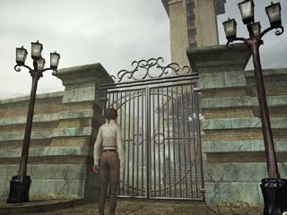
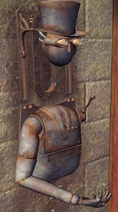
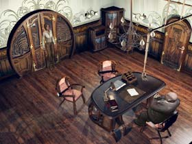
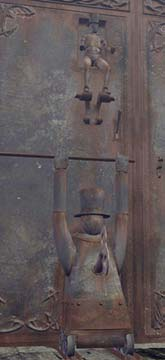

| 概要 | 地図 | |
| 淡いヒント集 | ヒント集 | 的確なヒント集 |
| 攻略最短ルート | Syberia 攻略へ |
市街と公証人の家
ホテルでの用事をすませたら、次は市街の探索である。市街には他の施設へとつながる場所がいくつもあるが、そこへ入る前には必ず何かをしなくてはならない。とはいえ、始めにやらなくてはならないことは、公証人と会うことである。 ・公証人の家を見つける ・公証人の家にあるカラクリ人形を正確に操作する ・公証人に、契約について話す ・どこかにある工場の鍵を入手する ということである。上に書いたものを読むと、公証人の家に行った後は、工場を調べてもいいのだが、教会に行くことをおすすめする。
教会
 ・葬儀が終わるまでは、門は開かない。先に、公証人に会っておくべきだ。 ・公証人との話が終われば、必ず門は開く。 ・公証人の家はどこにあるだろうか。
公証人の家にあるカラクリ人形
 ・これはカラクリ人形の手のひらを見るように作られている。 ・人形の手の上に重要な書類を置けば、室内にいる公証人は門を開けてくれるはずだ。 ・あとは人形の操作手順が分かれば問題ない。 ・まずは手のひらに書類を載せてみよう。その後、首をおろし見るように指示すればよい。
公証人の家
 ・あくまでもビジネスであり、対して難しいことはない。 ・手早く用件だけ聞いて、次の行動に移るべきである。 ・会話の内容は、ストーリーに影響するのでとりあえずは聞いておくべきであろう。
工場の門にあるカラクリ人形
 ・足りないのは、上の人形と下の人形をつなげる道具である。 ・道具さえ取り付ければ、下の人形のゼンマイを巻くことができる。 ・ゼンマイを巻いただけでは、門は開かない。他にも操作する箇所があるはずだ。 ・工場の門である。工場に関するものは管理者が持っているはずだ。しかし、その管理者は既になくなっている。それでは、彼女の遺品を持っているのは・・・? |
| 概要 | 地図 | |
| 淡いヒント集 | ヒント集 | 的確なヒント集 |
| 攻略最短ルート | Syberia 攻略へ |